BRAILLE DISPLAY
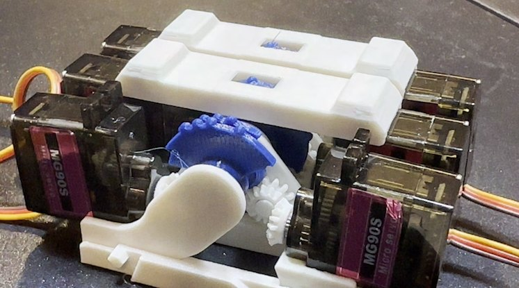
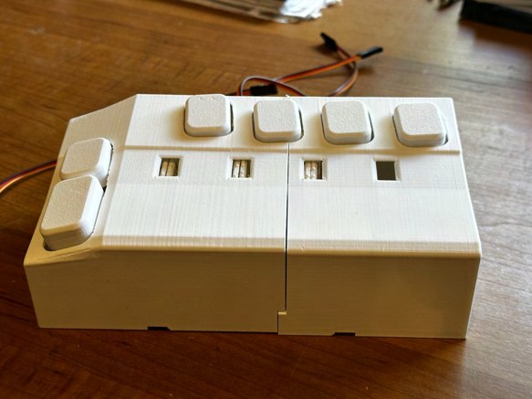
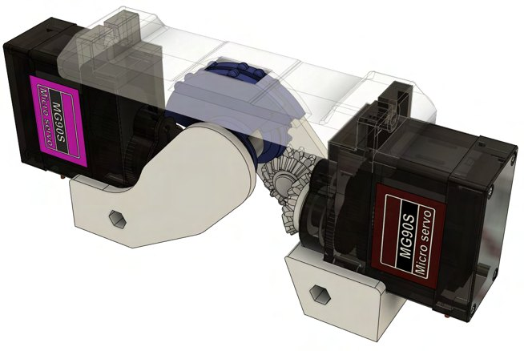
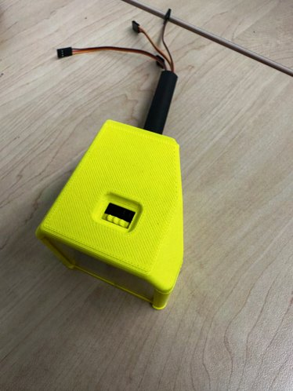
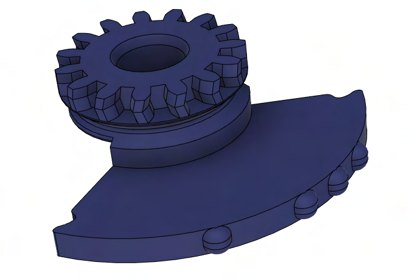
Overview
Refreshable braille displays cost somewhere between a thousand and ten thousand dollars. In most of them every dot on every cell is actuated on its own, which I think is an inefficient way to do it, and with hundreds of tiny, fragile parts being pressed all day they're also expensive to maintain.
I wanted to bring the cost down and make the actuation simpler, so I came up with a way to set a whole row of dots with one motor. It's a modular, 3D printed display with two servos per cell, built for teachers at Morris Knolls High School.
The idea
The up/down of a braille dot is just the 0/1 of binary. Take a cell lying on its side, so it's 2 rows of 3 dots. Each row can be written as a three-character string, like "101" or "000". I'll call that the row string.
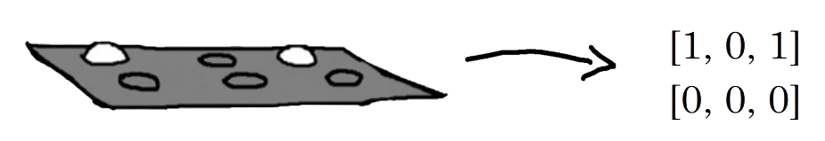
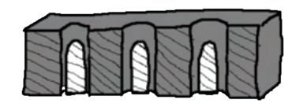
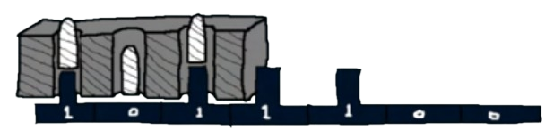
Three dots that are each up or down make 8 possible row strings. Now picture a key slid in under the row, like the pins in a lock: its bumps push some dots up and leave others alone. If the key is longer than the row, what you get depends on how far in it goes.
A key with all 8 combinations written one after another would work, but it'd be 24 characters long. A much shorter one does the same job. Sliding the key in i places is the same as reading the substring from i to i + 3, so what I need is the shortest string that contains every 3-character binary string somewhere inside it. That's a De Bruijn sequence: the shortest string containing every length-n string over a size-k alphabet exactly once. Here k = 2 and n = 3, and it's only 8 long: "10111000".
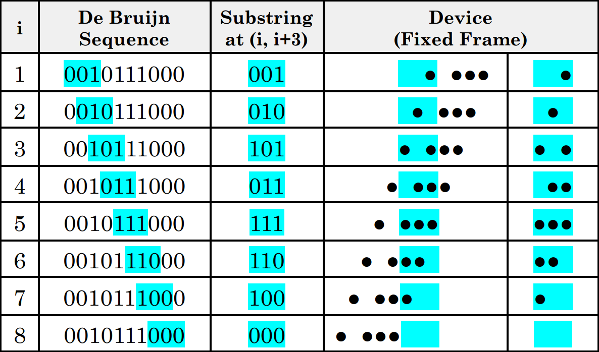
The 0s are just gaps on the key, which is why the strings in the table are 10 long instead of 8: the two leading 0s aren't really there. The sequence is also cyclic, which you might notice if you try to find all 8 substrings in "10111000" directly.
So instead of six actuators per cell there are two, one per row, and each one only has to move its key to one of 8 positions.
The device
Everything is modeled in Fusion 360 and 3D printed. The rigid parts are PLA, and the dots themselves are TPU so they're softer under your finger.
It only fastens together with press fits. After the 6 or 7 steps to put one cell together, you repeat that for as many cells as you want and clip them onto each other. Four to eight is useful for teaching.
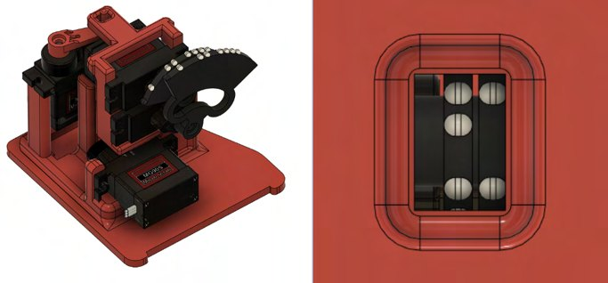
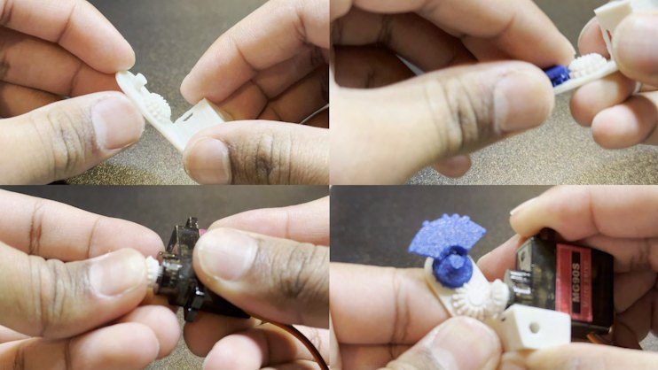
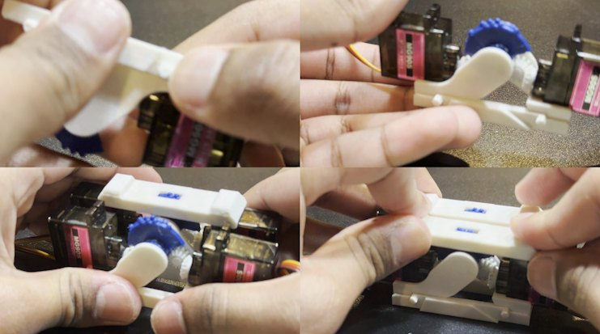
That lets a school decide how big they want it, and it makes troubleshooting and replacing parts easy. Fewer parts doesn't just make it cheaper to build. It also makes it cheaper to repair, harder to break and easier to fix.
Cost
With only two MG90 servos per cell, the display is cheap and small. The only other parts are the prints and the microcontroller, an ATmega32U4 board (Arduino Pro Micro), picked because it's tiny.
| One cell | Two MG90 servos and $0.13 of filament | $2.03 |
|---|---|---|
| 4 cells | 4 × $2.03 + $7 microcontroller | $15.12 |
| 14 cells | 14 × $2.03 + $40 of electronics (a bigger board with more pins, and power) | $68.42 |
Fourteen cells is what the Focus 14 has, which is something of an industry standard. It does more than show braille, so I added the rest of what it has: a Bluetooth module ($16), 9 keyboard switches ($3), 12 push buttons ($15), a USB-C breakout ($5), $50 for a custom PCB, any other electronics and a kilogram of filament, and another $50 just in case. All of those prices are rounded up from parts I've bought for other projects.
That comes to about $207. When I priced this in 2023 the Focus 14 Blue was $1,545, and at the time the software, the manual and the carrying case were all sold separately, with a 2-year warranty, for people with a permanent condition.
Code
Because the mechanism does most of the work, the electronics and code are simple. It takes English text from a GUI, turns it into servo angles in a 2-D array, and moves the servos there. That's what the teachers at Morris Knolls asked for: a simple way for sighted staff to write words out in braille without complicated, outdated or expensive tools. I was also working on keyboard and other inputs so users could interact with it.
//goal: convert input string to rotation angles for servos //example: "MIT" → [["36","96"], ["18","96"], ["48","80"]] int n = input.length(); int[][] rotationAngles = new int[n][2]; for (n iterations) { //convert the ith character of input to a braille array //example: convertToBraille("M") → ["101","100"] String[] braille = convertToBraille(input.substring(i, i+1)); //find the position of each row string in the De Bruijn sequence //since each substring is 3 chars long, there are 8 possible positions int row1Pos = "0010111000".indexOf(braille[0]); int row2Pos = "0010111000".indexOf(braille[1]); //the dots are 18 degrees apart rotationAngles[i][0] = row1Pos * 18; rotationAngles[i][1] = row2Pos * 18; }
In the actual firmware there's no braille at all: each character maps straight to its two angles, since storing that table takes very little memory. The version above would work just as well, though. Nothing here is limited by processing or servo speed, only by how fast a person reads.
Prototypes
Some of the versions along the way. One used a sliding key with the 2 × 4 sequence, since some braille is 2 × 4, but I was told that's not useful and went back to 2 × 3. Another was a single cell that oscillates under one finger, to mimic dragging your finger along a line of braille.
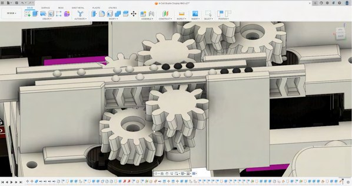
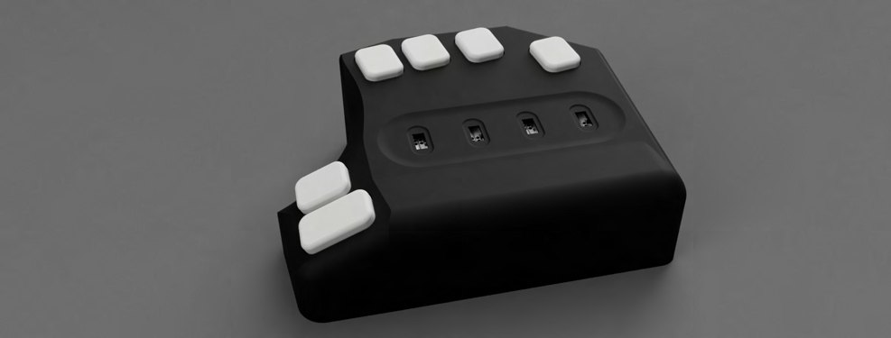
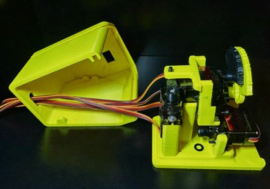
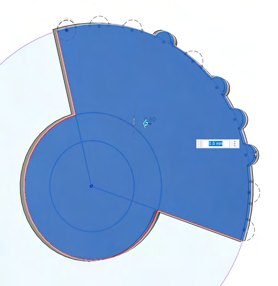
My 2023 maker portfolio video goes over this and a few of my other projects from high school: